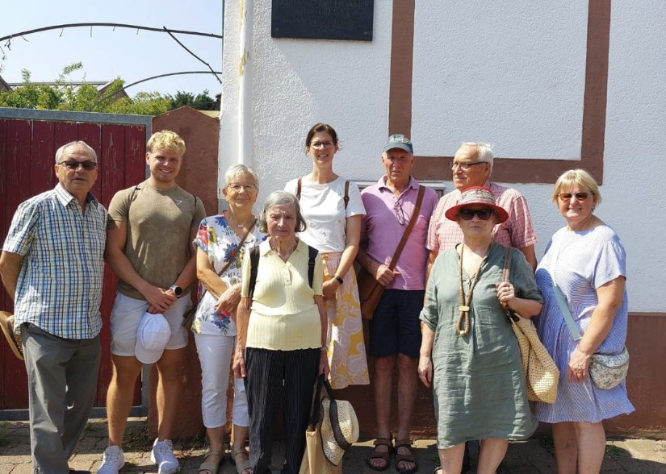
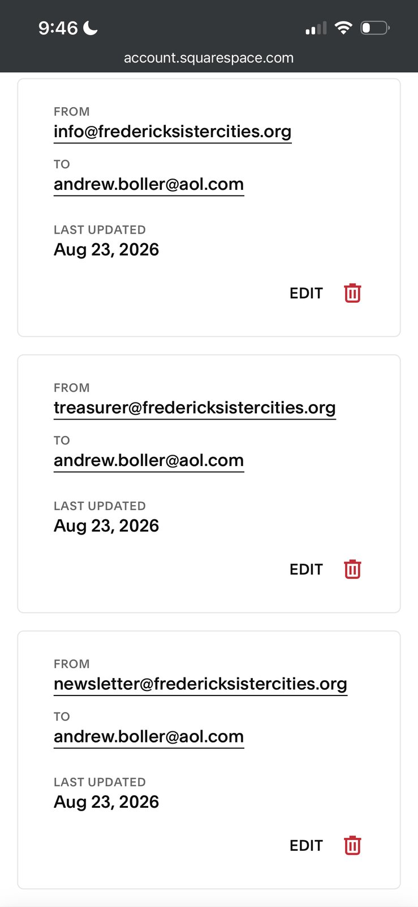

A living bridge between Frederick and Germany.
For over four decades we have connected the people of Frederick with our sister communities of Schifferstadt and Mörzheim — through cultural exchange, friendship, and our shared heritage.
Our two sister cities
A friendship rooted in shared heritage
The Frederick Sister Cities Association has spent four decades nurturing the bonds between Frederick and its German sister cities.
Schifferstadt and Mörzheim — your gateway to Germany
To promote interaction and cultural exchange between our sister cities and Frederick, an ad hoc committee first formed in town. In 1990, founding members — supported by Mayor Paul Gordon — established the Frederick Sister Cities Association.
For more than three decades since, the FSCA has actively engaged Frederick with Mörzheim and Schifferstadt — through student exchanges, host families, delegations, and cultural celebrations that keep our shared roots alive.

The deeper history
How two German towns became part of Frederick’s story
Mörzheim · 1959
Frederick’s first sister-city tie
It began in 1959, when Frederick entered a sister-city agreement with Mörzheim — the home village of John Thomas Schley, one of Frederick’s earliest settlers, who arrived in 1745 and built the city’s first house. The Schley, Shriver, and Delaplaine families lent their personal ties to that first bond.
Schifferstadt · 1982
A name Frederick already knew
In 1982, with the encouragement of Mayor Ron Young, Frederick formed an alliance with Schifferstadt — hometown of the Brunner family, who in 1736 farmed a 303-acre tract they named after their German home. The stone house they built in 1758 still stands today as the Schifferstadt Architectural Museum.
“The relationships between Frederick and our two sister cities have been instrumental in the development of our respective cultures — an avenue through which we pass this legacy on to generations to come.”
“Nicht nur Städte sind befreundet, es sind vor allem die Menschen, die miteinander verbunden sind. Bei allem was Menschen unterscheidet gibt es doch viel mehr, was sie verbindet.”
Gather, celebrate, connect
From membership meetings to Maifest, our calendar is full of ways to take part in the friendship.
Where to find us this fall
In the Streets
FSCA will be at Frederick’s annual downtown street festival.
Oktoberfest
FSCA will be at the Schifferstadt Architectural Museum’s annual Oktoberfest, hosted by Frederick County Landmarks Foundation.
There’s a place for you here
Become a member and help keep this friendship thriving across the Atlantic.
Join the Association
Membership is open to anyone interested in our work. Annual dues are just $20, payable each January, and your support directly funds exchanges and cultural programs.
- ✓Invitations to members’ events and meetings
- ✓Seasonal newsletter and annual report
- ✓A direct hand in our exchange programs
Four decades in pictures
Moments from exchanges, celebrations, and visits between our three cities.
Cole Tate represents Frederick in Schifferstadt and Mörzheim


In summer 2026, the FSCA awarded its official travel grant for the year to Hood College graduating senior Cole Tate — a Spanish major with minors in German and Arabic — sending him to visit both of Frederick’s sister cities, Schifferstadt and Mörzheim. The exchange was organized and funded by the FSCA with the goal of strengthening Frederick’s Sister City relationships through cultural immersion and firsthand experience, giving Cole the chance to build his language skills and intercultural experience while representing Frederick abroad.
Cole described Schifferstadt as a vibrant town with deep agricultural roots and a strong community identity, and Mörzheim as a close-knit wine village with rich traditions and local pride. He was hosted throughout his stay by local families who, in his words, were “warm, welcoming, and incredibly supportive,” sharing local traditions, history, and daily life with him and making him feel like part of the community. He also met with local leadership, including the Mayor of Schifferstadt and Mörzheim Ortsvorsteherin Carina Langer, who welcomed him and shared insights about each community. Cole named the most impactful moment of his trip as playing tennis with Mayor Langer.
Reflecting on the exchange, Cole thanked the FSCA for organizing, funding, and trusting him with the experience, along with his hosts, the two mayors, and the neighbors, friends, and families who welcomed him into their daily lives.
Travel grant sends Connor Wang to visit our sister cities
With the endorsement of Frederick’s Mayor Michael O’Connor, the FSCA awarded a travel grant to Connor Wang, a Frederick County resident with a German connection, to visit our two sister cities, Schifferstadt and Mörzheim, in July 2024. The FSCA grant covered the cost of Connor’s round-trip airfare to Germany. We also provided contact with host families for a stay of five days in each city. After he returned from Germany, Connor presented the FSCA with an oral report of his sister cities experience.
October 19 & 20: Oktoberfest at Schifferstadt Architectural Museum
FSCA once again participated in the Schifferstadt Architectural Museum’s annual Oktoberfest. As always, we sold our delicious Glühwein, a popular hit that often sells out. We also sold a variety of fun German-themed knick-knacks, including some new ones. And of course we gladly answered questions about our sister cities and the FSCA.
July 4th at the Schifferstadt Architectural Museum

At our table at the Schifferstadt Architectural Museum’s first-ever Independence Day celebration, we sold brats, hot dogs, baked goods, soft drinks, and water, helping make this an enjoyable occasion for all who stopped by!
Frühlingsfest, May 4 at Schifferstadt Architectural Museum
The Museum revived an old tradition, called Spring Fest in English, or Frühlingsfest in German. Attendees could dance the maypole, enjoy colonial children’s games, have their face painted, and tour the Schifferstadt house. The Frederick Sister Cities Association sold brats and German pastries.
Museums by Candlelight, December 10 at Schifferstadt Architectural Museum
The FSCA hosted a table in the museum’s Keller (cellar) where visitors could enjoy grilled sausages, Glühwein, and seasonal pastries. All proceeds from the sale of these items went to the support of our mission.
Oktoberfest at Schifferstadt Architectural Museum
After a 2-year COVID-induced interruption, the FSCA was happy to once again participate in the Schifferstadt Architectural Museum’s annual Oktoberfest, held on October 15 and 16. Fest attendance was high on both days, helped by the perfect fall weather. We answered many questions about our Sister Cities and the FSCA. There were also Germany-themed knick-knacks for sale, as well as our delicious Glühwein, a popular hit that we sold out of both days.
A visitor from Mörzheim
On July 11 and 12, 2022, the FSCA was pleased to host Felix Mosbach as he visited Frederick from his hometown, our Sister City Mörzheim. His visit was part of an extended trip abroad he was taking between finishing his undergraduate degree and starting his master’s.
Traveling by bus from New York City, Felix first arrived in Washington, DC, then took Metro’s Red Line to Shady Grove Station, where he was met by FSCA member Rick Peters, who served as his informal host and guide during his two-day visit. Because Felix knew little about Frederick beyond its tie to Mörzheim, the first stop was the Frederick Visitor Center, where he and Rick were joined by FSCA member Ronnie Osterman for the orientation film and displays, followed by lunch at Frederick Coffee Co. & Cafe.
A highlight of the day was a meeting with Mayor Michael O’Connor, whose warm welcome made for a memorable moment. Former FSCA president Fritz Buckingham then joined the group for a walk to Trinity Chapel and Church School, founded in 1745 by John Thomas Schley — whose hometown was also Mörzheim. Felix was interested to learn that Schley, one of Frederick Town’s earliest settlers, built its first house and went on to become a schoolmaster and tavern keeper. The afternoon continued down Market Street and along Carroll Creek Linear Park, ending with a stop at Idiom Brewing Co.
Day two took the group to the National Fallen Firefighters Memorial and 9/11 Memorial in Emmitsburg, then to Harpers Ferry National Historical Park, and an impromptu visit to Middletown’s South Mountain Creamery, whose farm setting reminded Felix of home. The visit closed with a farewell dinner at Brewer’s Alley, joined by Fritz and FSCA member Rosemary Orthmann. The FSCA also covered Felix’s Airbnb and sent him off with a Frederick ball cap.
An interesting addendum: Felix’s grandfather was mayor of Mörzheim at the same time Ron Young was mayor of Frederick — the mayor who, in 1959, established Frederick’s Sister City connection with Mörzheim. The two mayors had corresponded, and Young had visited Felix’s grandfather on a trip to Mörzheim, news that only deepened Felix’s connection to Frederick.
German-language movie night at Grace United Church of Christ

Our first event of 2022 was a showing on Friday, June 10, of the 1931 film Die Dreigroschenoper (The Threepenny Opera), a classic adaptation of Bertolt Brecht’s 1928 theatrical sensation set in London’s back alleys. The restored HD black-and-white transfer was in German with English subtitles. Admission was free, and German-style baked goods and sodas were available for purchase.
Frederick Mayor O’Connor issues Sister Cities 40th Anniversary Proclamation


April 2022 marked the 40th anniversary of Frederick and Schifferstadt becoming sister cities. To celebrate, Frederick Mayor Michael O’Connor issued a proclamation inviting all citizens to acquaint themselves with our sister city and the cultural influences that distinguish our home. Mayor O’Connor also sent a copy of the proclamation, along with a letter of greetings, to his counterpart in Schifferstadt, Bürgermeisterin Ilona Volk. Included in the packet was a print of a painting of the Schifferstadt Architectural Museum by newly retired U.S. Senator Ron Young, whose ancestry links to the Brunner family of Schifferstadt. As Frederick’s mayor in 1982, Ron Young was instrumental in establishing the Sister Cities connection between the two cities.
FSCA garners mentions in local publications
Although COVID-19 and dwindling FSCA membership combined to slow the Association’s activities, thanks to the enthusiasm of long-time member and booster Ronnie Osterman, the FSCA began taking steps to become active again heading into 2022. In the meantime, Ronnie’s efforts earned the FSCA mentions in two local publications: a meeting notice Ronnie placed with The Frederick News-Post led to a staff interview and article in the paper’s August 20th edition, which in turn led to a mention in the paper’s “Yeas and Nays” editorial column the next day. More recently, Ronnie had the opportunity to talk with Frederick magazine about the FSCA and how her involvement led to wonderful experiences and fond memories from her visits to our two German sister cities, in an interview that appeared in the magazine’s December print edition.
City awards grant to FSCA
The FSCA was pleased to be named a recipient of a City of Frederick Community Promotion Grant, which awards funding to nonprofit charitable or civic organizations to supplement existing funds for services that positively impact City residents. The FSCA applied at the end of 2019, as the City was busily planning its 275th Anniversary celebrations throughout 2020, indicating the funds would help cover monthly operating expenses and free up other funds for Sister Cities activities tied to the anniversary. Even in the best of times the FSCA’s income from membership fees and fundraising is unpredictable, and with COVID-19 halting both the City’s anniversary events and the FSCA’s own fundraising activities, the grant funds were especially welcome, helping the Association be ready to once again promote Frederick’s German culture and heritage when the time came.
March 7: German movie event at Urbana Library

In collaboration with the Urbana Library, the FSCA hosted a showing of the acclaimed black-and-white German tragicomedy “A Coffee in Berlin,” shown with subtitles. Originally released in Germany in 2012 under the title “Oh Boy,” it was later released in the US under its English title. FSCA members who had spent time in Berlin shared some of their experiences of life in the city, and all attendees engaged in a lively discussion of the film afterward.
February 1: Winterfest at Grace United Church of Christ


The FSCA and Grace United Church of Christ collaborated on this event, themed like Fasching or Mardi Gras. Festivities included a performance of German songs by local group Frederick Stimmung — members Shawn McDermott, Steven “Fritz” Buckingham, Reiner Prochaska, and Grace UCC Pastor Rob Apgar-Taylor entertained attendees with a round of German folk songs. FSCA provided our famous Glühwein and Warsteiner Bier, and Grace United provided Würsts, Rotkohl (red cabbage), and donuts — an enjoyable afternoon for all attendees, with Regina Schwab summing it up: “Glühwein makes the day better.”
A festive luncheon to celebrate an active, successful year

On December 15, FSCA members gathered at the local Manalù Italian Restaurant to enjoy each other’s company and celebrate a year of successful activities — among those gathered were Rosemary Orthmann, George Albrecht, Regina Schwab, Brian Guenther, Rick Peters, FSCA President Steven “Fritz” Buckingham, Ruth Heflin, Ronnie Osterman, Ken Poisson, and Sybille Faucette.
Museums by Candlelight, December 14


Once again, the FSCA hosted a table at the Schifferstadt Architectural Museum, where visitors in the museum’s Keller (cellar) could talk in person with FSCA members while enjoying Bratwursts, Glühwein, Stollen, and Lebkuchen. Also for sale were German-themed refrigerator magnets, Christmas tree hangers, and Bavarian-style felt hats, with proceeds supporting the FSCA’s mission. New this year were German Christmas songs sung by Frederick vocal group German Stimmung. FSCA also had an information table at the C. Burr Artz Public Library — a new, unstaffed venue this year where interested passersby could pick up printed materials, including the new rack card.
Oktoberfest at Schifferstadt Architectural Museum

We once again participated in the Schifferstadt Architectural Museum’s annual Oktoberfest, held this year on October 19 and 20. Saturday was a beautiful day, with lots of foot traffic past our new booth location next to the herb garden. We answered many questions about our sister cities, handed out our newly minted rack cards, and sold a fair number of German-related items. Sunday, however, the weather was unfriendly, and we struck the tent early. Many thanks to all the volunteers who helped make this a successful event!
Frederick’s Oktoberfest, September 27 & 28


This year, FSCA members participated in the Oktoberfest’s opening keg-tapping ceremony on Friday evening and co-hosted a German Spelling Bee on Saturday with Heritage Frederick. In longstanding tradition, Germany’s famous Oktoberfest in Munich is officially kicked off when the mayor opens the first beer barrel by inserting a tap with as few blows as possible — so after FSCA member and local MET actor Reiner Prochaska extended “ein herzliches Willkommen zum Oktoberfest!” (a hearty welcome to the Oktoberfest), Frederick Mayor Michael O’Connor successfully inserted the tap with just four blows. Afterward, opening ceremony participants, including Mayor O’Connor and County Executive Jan Gardiner, enjoyed a libation from the freshly tapped keg.
FSCA, co-hosting with Heritage Frederick, held its third annual German Spelling Bee on Saturday. Moderator Brian Guenther was assisted by judges Marty Lapera, Ruth Heflin, and George Albrecht. Three prizes were generously provided by the Rotary Clubs of Carroll Creek and Southern Frederick County. The top spellers were: 1st place, Hermine K. ($100 gift certificate); 2nd place, Ethan M. ($50 gift certificate); 3rd place, Ryan L. ($25 gift certificate).
Sommerfest


Despite unseasonably hot July weather, members and invited guests enjoyed an afternoon of brats, beer, and Gemütlichkeit, both outdoors and indoors in air-conditioned comfort, entertained by the voices of Frederick Stimmung raised in boisterous song. The highlight of the gathering was a visit by a former FSCA member and her husband, in Frederick from Florida, along with a surprise visit by a couple from Schifferstadt — the husband had visited Frederick 17 years earlier through an FSCA program and was accompanying his wife while she worked temporarily in the US. Everyone shared many laughs and “Prosits.”
New Paltz Band at Hood College’s Brodbeck Music Hall
The four-member New Paltz Band from Schifferstadt and vicinity entertained an attentive audience of about 75 on Friday evening, July 5, singing original and traditional “pennsylvaanisch-deitscher” lyrics set to folk melodies from the Pfalz region of Germany as well as familiar American folk melodies. Between songs, the band members spoke about historical and cultural differences and similarities between “old” and present-day life in the Pfalz region and shared Amish and Mennonite customs that developed in America over the years. Frederick’s Mayor Michael O’Connor was in attendance and spoke to the value of Frederick’s Sister Cities program.
The FSCA thanks Dr. Scott Pincikowski, Hood College’s Professor of German, who arranged the venue and helped kick off the evening, the Maryland Ensemble Theatre for the sound system, and the Frederick County Landmarks Foundation for opening the Schifferstadt Architectural Museum for a private tour by the band. The band’s US visit was sponsored by the German Embassy and the Goethe Institute in Washington as part of Deutschlandjahr USA 2018/19.
First Frederick German “Kraftung”

Convened by the FSCA, representatives from several local community organizations engaged in German-related activities met on Saturday, June 15, at Heritage Frederick. The two-hour Kraftung gave attendees a chance to get to know one another and learn what others were doing, and explored the possibility of an ongoing cooperative effort among the various local entities fostering Frederick’s German heritage. Attendees included representatives from the FSCA, Frederick County Landmarks, Heritage Frederick, Visit Frederick, Grace United Church of Christ, and Evangelical Reformed United Church of Christ, plus Alderman Roger Wilson, who stopped by to share that the city would be celebrating the 275th anniversary of its charter in 2020. Based on this first meeting’s success, the FSCA hopes to make the Kraftung an annual workshop.
Maifest
On Saturday, May 4, the FSCA and Grace United Church of Christ collaborated to help the community and visitors to downtown Frederick welcome in spring with a Maifest. In acknowledgement of this first-time event, Mayor Michael O’Connor officially proclaimed the day as Schifferstadt Day 2019. Attendees listened to German folk songs and danced around a maypole, with brats, pretzels, beer, and an authentic Maibowle — a festive, herb-infused wine punch and traditional German way of celebrating spring — rounding out the day. The pleasure everyone took in the event set the tone for what FSCA and Grace UCC hope will become an annual springtime celebration.
In addition to Museums by Candlelight at the Schifferstadt Architectural Museum and Oktoberfests at the Frederick Fairgrounds and Schifferstadt Architectural Museum, 2018 FSCA highlights included the following.
TJ HS student visits Frederick’s sister cities

With the help of an FSCA-provided airfare grant, Zachary Klug, a student at Gov. Thomas Johnson High School, visited Frederick’s sister cities from July 28 to August 11, 2018. With his host family in Mörzheim, Zachary toured many famous sites, including the Old French Gate and scenic mountains, met with Ortsvorsteherin Dorothea Mueller, and was invited to add words to the Mörzheim “Golden Book.” He spent his second week in Schifferstadt, where he joined the city’s 1,150th anniversary celebration. “While I was there the biggest things that I loved was the language, talking to the people…seeing how…although we speak a completely different language we’re very the same at heart,” said Klug.
Schifferstadt gets more visitors from Frederick

July 6, 2018. During Sebastian Buckingham’s summer vacation at his grandmother’s house in Germany, he did not miss visiting Frederick’s sister city Schifferstadt. Mayor Ilona Volk met him and made sure he enjoyed his time in Schifferstadt while staying with the Imo family. Frederick’s strong ties to our sister cities should encourage every traveler visiting Germany to pay a quick stop to receive a warm welcome.
Frederick celebrates sister city’s 1,150th anniversary


On Friday, May 18, 2018, the Frederick Sister Cities Association held a celebration at the Schifferstadt Architectural Museum in honor of the 1,150th anniversary of Frederick sister city Schifferstadt. Proclamations were presented from the City of Frederick by Mayor Michael O’Connor and from the state government in Annapolis by State Senator Ronald Young, a descendant of Joseph Brunner of Schifferstadt, the original owner of the farmhouse that is now the Schifferstadt Architectural Museum. The toast was made with wine sent from Mayor Ilona Volk of Schifferstadt.
FSCA 2018 travel grant recipient announced

April 30, 2018: The FSCA announced that Thomas Johnson High School senior Zachary Klug was the recipient of that year’s travel grant to visit Frederick’s two sister cities, Schifferstadt and Mörzheim, that July and August. The FSCA grant covered the cost of Zachary’s round-trip airfare to Germany, plus contact with host families for a stay of five days in each city — the first week in Mörzheim, then on to Schifferstadt for the second.
Dinner for German visitors

On Wednesday, April 18, 2018, the FSCA hosted a dinner at Brewer’s Alley for visiting personnel from the German Schwarzwald National Park, the superintendent of Catoctin Mountain Park in Thurmont, his wife, and the US State Department’s Consul General for Germany. The visitors were in Frederick in connection with plans to sign a sister parks agreement between Schwarzwald National Park and Catoctin Mountain Park.
FSCA president visits our sister cities
A quick ‘Blitz-visit’ took FSCA’s president to both of our sister cities in Germany. On Friday, April 20, a meeting with Schifferstadt Mayor Ilona Volk and Partner City Association (Freundeskreis Frederick) president Ursula Heberger was arranged, where the good relationship between the two cities was emphasized; Ilona could not hold back her joy about Frederick’s participation in Schifferstadt’s 1,150th anniversary. The same day, a 40-minute drive from Schifferstadt took FSCA’s president to Mörzheim to meet Ortsvorsteherin Dorothea Mueller. The hospitality in both cities was overwhelming.
Frederick Sister Cities Association meets the mayor

On Monday, January 22, 2018, representatives of the Frederick Sister Cities Association met the Mayor of Frederick and emphasized the importance of keeping the cultural exchange between Frederick and our sister cities Mörzheim and Schifferstadt active.
News from across the Atlantic
Read our seasonal newsletters — or subscribe to have each issue delivered to your inbox.
December 2025
Current IssueOur latest newsletter with event recaps and news from Schifferstadt and Mörzheim.
May 2020
Written in the early days of COVID-19, this issue reflects on staying connected across the distance, looks back on a Winterfest and German film night held just before lockdowns began, and shares a heartfelt note of solidarity from friends in Schifferstadt.
November 2019
A recap of a busy fall — the New Paltz Band's Hood College concert, a Sommerfest reunion with visiting friends from Schifferstadt, Oktoberfest's keg-tapping and German Spelling Bee, and a preview of the Schifferstadt youth choir's planned 2020 visit.
June 2019
The debut issue of the FSCA Kurier, introducing the newsletter, recapping the Association's founding and its ties to Mörzheim and Schifferstadt, and covering spring 2019 highlights including the first Maifest and the inaugural German Kraftung meeting.
We’d love to hear from you
Questions about membership, hosting, or events? Send us a note.
Reach us
Meetings
Membership meets twice yearly — in April and October. The Board of Directors meets every other month. All members are welcome.